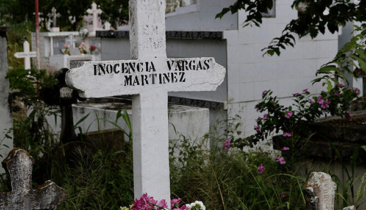

Se ha venido escuchando que la persecución era solamente para los enfermos que no podían pisar el terreno limpio y pulcro del país pero entonces, ¿qué pasó con los hijos sanos que nacieron de padres enfermos?, ¿cuál fue esa vida que tuvieron, si sus padres eran trasladados a los lazaretos? , ¿quién protegió los derechos del menor? Y demás inquietudes que con urgencia se buscaba una respuesta cuando fueron ellos también, parte de las políticas públicas que los dejó en la vida huérfana y desamparada al no tener en su mayoría, un pariente que velara por ellos. Estos interrogantes no fueron del todo fáciles de responder, teniendo en cuenta que era buscar sobre el pajar, la aguja perdida durante varios años.
Sin embargo, caminando sobre el piso pavimentado de Agua de Dios y preguntando entre el común, se conoció la vida no solo de Edelmira Vargas que, a sus más de 85 años, llora sobre la tumba de su madre enferma sino también, de Efraín Oyaga el productor audiovisual que nació sano dentro del antiguo lazareto de Caño de Loro, isla de Tierra Bomba.
Por un lado, mientras la vida de Edelmira Vargas es tan enriquecedora pero a la vez, fragmentada por el Alzheimer que nubló su pasado; la palabra Agua de Dios ya no hace eco sobre su cabeza al menos que se visite la tumba de su madre Inocencia Vargas en el cementerio Central para escuchar desde luego, las lágrimas como aquel sentimiento de impotencia que no recordaba tener, cuando intenta esclarecer aún junto a su voz quebrantada, que la lepra no es contagiosa.
Edelmira fue separada de su madre y hermanos por culpa de la política que permitía a todos denunciar lo que no era parte de la belleza. Allí, mientras la sociedad actuaba como polícia encubierto, su padre participó y sin remordimiento, gritó al cielo y señaló a su esposa como mujer leprosa. Desde ahí,y con la edad de siete u ocho años, la vida de Edelmira dio un giro inesperado al convertirse en una nomada y huerfana niña que vivió de familia en familia soportando el maltrato físico y verbal. Pues ella, como un cuento de hadas, fue la cenicienta que recorrió los campos de Pie de Cuesta, Santander, repartiendo todas las mañanas cantinas de leche para los obreros porque de lo contrario, un golpe en su cuerpo recibía.
Ella independientemente de llevar en su cabeza el nuevo pasajero invisible que hace olvidar sus recuerdos y quehaceres actuales, recuerda de manera esporádica y entre lágrimas, la mala vida que tuvo desde su niñez cuando el único buen familiar que no la rechazó y por ende, disfrutó de su compañía; fue una perra loba que no la desamparó.“Esa familia tenía una perra, como una loba, y comía mejor que yo, tenía mejor cama que yo y yo, lo único que hacía era quitarle comidita de su plato para comer. La perra nunca me mordió”, recordó.
Una anecdota quebrantada en la que se tuvo que dar veracidad a partir del testimonio de Rosa Cabrejo, la mujer de 92 años que al ingresar por primera vez al lazareto de Contratación, Santander con la edad de tres o cuatro años, decidió desde luego, trasladarse al lazareto de Agua de Dios a los 12 o 15 años para ser hoy en día, una de las mujeres más antiguas del albergue San Vicente.
Para conversar con Rosa se debe tener en mano un tinto y un pan de queso como merienda luego del desayuno, el almuerzo o la cena; en la que luego de la confianza se pueda escuchar el relato sobre la vida de los hijos sanos de padres enfermos.
Pero si el testimonio de Rosa no basta para comprender la rudeza con la que decidían por la vida de los hijos sanos; Hernán Moya, archivista del edificio Carrasquilla (Sanatorio de Agua de Dios) y amante de la historia del municipio, logra esclarecer lo qué sucedía con estos menores de edad.
La vida de Efraín Oyaga fue distinta gracias al conocimiento que tuvieron sus padres frente a lo que sucedía con los hijos sanos. Con él, su madre Lilia Díaz de Oyaga y su padre José Luis Oyaga enfermos de lepra y recluidos en el lazareto de Caño de Loro, isla Tierra Bomba, lograron evadir y burlar la política del momento que tenía como intención, separar a los familiares sanos de los enfermos dentro del leprocomio, debido a que iba a ser demolido por las malas condiciones sanitarias en que se encontraba.
“Resulta que, en 1950, el gobierno decidió acabar con el sanatorio de Caño de Loro, bombardeándolo con la Fuerza Aérea. Antes de eso, sacaron a los enfermos y los trajeron en aviones al aeropuerto de Flandes en el Tolima y de ahí, los trasladaron acá a Agua de Dios. Obviamente yo no me pude venir con mis papás porque hubiera corrido el riesgo de que, al llegar como niño sano a Agua de Dios, el gobierno me hubiera secuestrado, me hubiera quitado de mis papás como pasaba con muchísima gente y me hubiera llevado a un preventorio que queda en Bogotá, en Ibagué o acá en las orillas del municipio”, recuerda Oyaga a sus 73 años.
Por lo que sus papás decidieron dejarlo en manos de su abuela materna hasta el momento en que se instalaran de manera correcta en su nuevo hogar llamado lazareto de Agua de Dios. Una vez acomodados, sus padres junto a la complicidad de un chofer y el conocimiento de su abuela, ingresaron a Efraín a escondidas con la edad de cuatro años para reencontrarse de nuevo con sus padres.
Travesía que lo llevó a vivir entre las azoteas de los vecinos para no ser capturado por la polícia que, paulatinamente, hacia persecusiones. Hoy en día, Efraín sigue viviendo en la misma casa que sus padres construyeron para seguir disfrutando de su vejez...